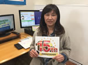
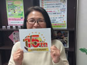
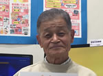
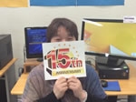
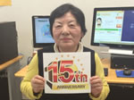
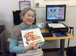
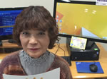

満点合格を目指して!!
- 森田 浩明さん
- 浜松プラザフレスポ教室（静岡県）
書類を作成するために入会し、ワードやエクセルを学習しました。その成果としてMOSやサーティファイの資格を取得し、さらに現在も学習中です。インストラクターは、優しく丁寧に教えてくれるので、非常に分かりやすいです。

MOS合格が目標です！
- 野出 佳代さん
- エコール・マミ教室（奈良県）
転職を機にパソコンを習い始めました。
初めは基礎だけ学べればいいと思っていたのでこんな事は出来るのかな？こんな事出来るんだ！とだんだん面白くなり、今はMOSの合格が目標です。先生方も気さくで楽しい方ばかり。一年半続いたのは、先生方とアットホームな雰囲気のお蔭ですね。
これからはイベントにももっと参加したいし、学習も頑張りたいと思います。
エクセル・パワーポイントの資格取得が目標！
- Yさん
- アステ川西教室（兵庫県）
受講前は「パソコン＝難しい」でした。
教室には様々な年齢の方が来て楽しんでおられるので今では私も前向きに取り組む姿勢が自然となってきました。
難しそうな課題でも先生と一緒に練習を繰り返していき、だんだんとこなせるようになっていくのは、とても素敵な時間です。
自分のペースで続けることができています
- 瀬戸 宏美さん
- イオン京橋教室（大阪府）
全く触り方も知らなかったのですが、少しずつ入力もできるようになってきたことが良かったのと、自分のペースで通えるところが特に自分に合っていて良かったです。仕事をしながら続けることができるのでプレッシャーやしんどさがなく通いやすいです。先生みんなやさしく話しやすいです☆

取得できる資格は全て取ってみたい！
- 片岡 美智子さん
- イトーヨーカドー流山教室（千葉県）
会社の看板、ディスプレイを作ったら、社長に評価をいただきました。また、社内行事の資料や、旅行のしおり作成も社員に好評！統計表や、業務に必要な管理表も、エクセルを大活用し業務に役立っています。
まだまだ知らないエクセル関数があるので、今のパワーポイント技能認定試験が終わったら、エクセル技能認定試験をトライしようと考えています。
元来、飽きっぽくてすぐに挫折する私ですが、パソコン市民講座だけは例外です。教室の先生もとてもアットホームで良い方なので楽しく続けられています。
教えられる側から教える側に!
資格も趣味も大満足!!
- 森重 友恵さん
- 浜松プラザフレスポ教室（静岡県）
教室に通い始めた時は文字入力が出来る程度でした。仕事でパソコンを使う事になり、何とか迷惑をかけない程度に操作が出来るようになればいいと思って始めましたが、通い始めて約4年8ヶ月でパソコン検定3級、準2級、MOSワード、エクセル、サーティファイエクセル3級、ワード3級の資格を取得する事が出来ました。
今では、会社の人に教えてあげたり、自分でカレンダーを作ったりしています。お子さんの写真やペットの写真を入れて作ったカレンダーは皆さんに喜ばれています。家の者には50の手習いと言われましたが、教室に通って本当に良かったと思います。

時代の流れに追従していきたい
- 横山 和正さん
- エコール・マミ教室（奈良県）
定年後、余暇を利用して単なる独学で学んだパソコン。しかし、その奥行きの深さに一時投げ出したこともある。時期が来れば学校に行き基礎からと思いつつ、その時、近場にそんな学習の場所があることを新聞のチラシで知り入学。現在二年目を迎えているが、いろいろな手法また便利な諸々の機能があることを学び、いまではエコールマミ教室の虜になって余生を頑張っています。
終生勉学・日々精進
次はワードで書類作成に挑戦！
- 速井 重幸さん
- アステ川西教室（兵庫県）
イヤ～！良かったです。
自治会の総会までに議事式次第の作成や、決算や予算案が出来上がりホッとしております。計算では、excelが、書類ではWordが大活躍でした。飲み込みの悪い生徒で講義中の途中で度々先生を呼びつけて申し訳なく思うております。
パソコンが私自身のやりたいことをいろいろと手伝ってくれるように、毎日可愛がってやろうと思います。
パソコンのとりこになりつつあります
- 上原 昌さん
- イオン京橋教室（大阪府）
入会する前、パソコンは銀行振り込み、株の売買等の簡単な操作で満足していましたが、勉強していくうちに奥深さびっくりしました。当初、パソコンの難しい操作は若い人たちが習得し使いこなしたらいいことで私たち高齢者は無理して覚える必要はないと思っていましたが、高齢者だからこそ脳の活性のためにパソコンを利用すべきだと思いました。京橋教室に入会して1年ほどですが教室の先生方の親切、丁寧なご指導といつも明るい雰囲気の中で少しずつですが、パソコンのとりこになりつつあります。特に今までとりだめしていた写真がパソコンの中にきれいに整理できたのと海外旅行の思い出マイブック等は妻も大変ビックリしております。今はワード講座を勉強中ですが、いつも覚えては忘れ、覚えては忘れと繰り返しながら少しずつ進んでいます。焦らずゆっくりと進みたいと思います。最後にタイピングをもう少し速く打てるように！←自分に気合です。
先生に勧められ、資格が取得できました。
- 阪本 泰子さん
- イトーヨーカドー流山教室（千葉県）
以前は、我流で何とかPC操作をしていました。
しかし会社で、PCの入れ替えがあり、ウィンドウズXP→7になる為さすがに不安になり入校しました。
ビデオの視聴、テキストもとても分かりやすいです。
先生がそーっと後ろから見守って下さり、後で丁寧にコツを教えて下さったりPCに関する全般的な質問にも快く回答頂けます。
私は、特に資格を取るつもりはなかったのですが、先生に勧められお陰様で取得できました。とても、うれしかったです！久しぶりにチャレンジする事を思い出しました。
先日、受講生が利用できる”クラブオフ”という旅行、食事、映画等が割引になる会員サービスで”チーズ・フォンデュ”を10%割引で食べてきました。また是非、利用しようと思います。
仕事に使えて役に立っています！」
- 藤田 幸江さん
- イトーヨーカドー流山教室（千葉県）
まず仕事の上で使える様になりました。それに対しては教室に通って良かったと思います。ブログでは、沢山のコメント、写真や、絵の発表の場にもなって本当にパソコンで違った世界を見る事が出来て今はとても楽しんでいます。
私にはパソコン市民講座に感謝ですね！
日常生活を楽しく生きていく為に今後も学んでいきます！
- 安藤 三希子さん
- ショッパーズプラザ海老名教室（神奈川県）
15周年を迎えられおめでとうございます♪
気がついたらOA機器（パソコン・iPad・iPhone）の歴史と機器の進化に追いつけず、この講座に通い続けております。先生方もその進化の対応とご指導ご苦労が大変だったと思います。これからの世の中、アプリの多様化も含めて、いかにそれらを使いこなしていけるかが今後の私の課題です。
私に日常生活を楽しく生きていくために必要な内容だけでもを今後も学んでいきたくご指導ご教授よろしくお願いします。ボケ防止の緩和の為にも!!

スマホは楽しい！
- 西川 香苗さん
- エコール・マミ教室（奈良県）
スマートフォンを使ってみたいけれど。。怖い！買い替えたいけど使いこなすまでの間に連絡が出来なくなたらどうしよう、不安！
誰かすぐそばで教えてくれる人はいないかなぁ？と思っていたら、折込広告が入りました。チャンス！と思い、すぐに申し込みました。
1月に入会し、2月の旅行でマップが大活躍！！この年で～、機械音痴やし～、別にガラケーで満足してるから必要ないし～と色々と言い訳を付けていましたが、スマートフォンは楽しい！！です。
先生、お世話になっています！ ありがとうございます！
たくさんのことができるようになりました
- 文谷 節子さん
- イオン京橋教室（大阪府）
iPadは"0"からのスタートでしたが、講座を受けるたびに楽しい使い方を学べました。今では色々な情報収集や写真集の作成、動画の編集等が簡単にできるようになりました。今年のカレンダーも苦労しましたが最高のマイカレンダーとなりました。年齢的にも何かと不安でしたが、先生方の丁寧な指導によりたくさんのことができるようになったのは大変良かったと思います。

iPadで文書作成したいです！
- 新子 久美子さん
- エコール・マミ教室（奈良県）
iPadで写真を撮ったり印刷したり色々と戸惑ったりで大変ですが、講師の先生方に助けていただいています。また、iPhoneも何とか少しずつ慣れて使えるようになり、毎日楽しく通っています。

教室との出会いがラッキーでした。
- 石井 峰子さん
- ライフ香里園教室（大阪府）
病気の後遺症で左手足の麻痺が残り、不自由な暮らしになりましたが、趣味のパソコンやiPadが使えることで、検索が出来るので楽しみが増えました。
苦手のスマホも何とか使えるようになり、便利です。
ライフ香里園教室との出会いがラッキーでした。

ブログが楽しいです
- 鎌田 節子さん
- エコール・マミ教室（奈良県）
iPadでブログにお料理を載せることが楽しみです。
皆様のブログを楽しませてもらっています。
タイピング大好き
- 佐野 さよ子さん
- 津島教室（愛知県）
入講して8年ぐらいになります。タイピングのタッチの音色がここまで引っぱってきてくれたのではないかと思います。イベントも色々ありましたが、スカイプでの鎌田先生と教室とのライブは感動的でインストラクターもかなりテンション上がっていました。